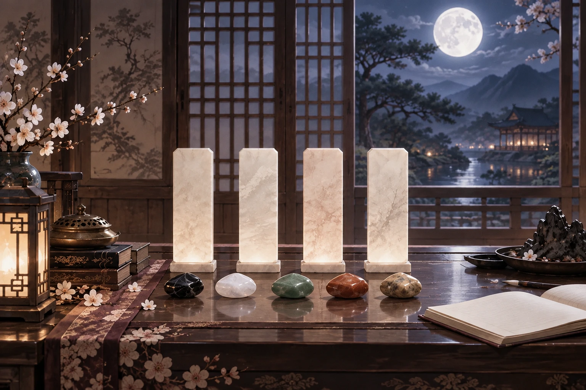
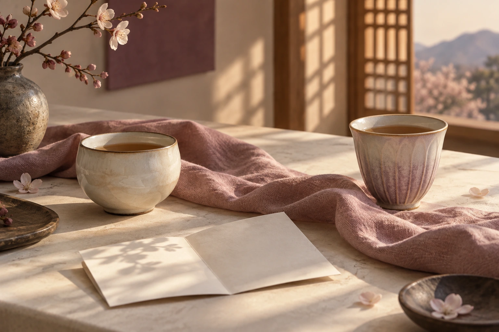

잘하려다, 혼자 지치고 있나요?
강점이 부담으로 바뀌는 지점을 살펴요.
타고난 기질부터 일·사랑·돈의 선택까지,
내 사주를 생활의 언어로.

강점이 부담으로 바뀌는 지점을 살펴요.
내 역량을 살리는 환경이 궁금할 때.
표현과 기대가 달라지는 이유를 읽어요.
기질을 설명하는 데서 멈추지 않고,
일과 관계에서 어떻게 드러나는지.
강점은 어떻게 살리고,
부담은 어디서 조절해야 하는지.
디지털 풀이 상품입니다.
사람이 결과마다 직접 상담하는 방식은 아닙니다.
“말씀 덕분에 많이
생각이 정리 되었습니다
감사합니다!”
“사주특성에 대해 설명해주신 걸
쭉 읽어보니 신기하고
시원한 기분입니다”
제작자의 과거 직접 상담 후기입니다.
이 디지털 상품의 이용 후기가 아니며,
같은 경험이나 결과를 보장하지 않습니다.
기질을 읽는 나의 중심
태어난 때의 기운과 균형
다섯 기운이 어우러지는 방식
일과 관계에서 맡는 역할
태어난 연·월·일·시의 여러 단서를 함께 읽어요.
기본 기질과 재능, 관계의 출발점
나를 돕거나 부담을 주는 힘
힘이 모이는 방향과 나의 역할
강점이 살아나는 조건과 주의점

실제 풀이 항목을 쉬운 이름으로 묶어 안내합니다.
“안정과 신뢰를 최우선으로 합니다.
천천히 감정을 쌓아가고…”
토(土) 일간의 연애 성향에서,
안정과 신뢰를 중시하는 경향을 읽어요.
연락의 답을 서두르기보다,
서로 편안한 간격을 이야기해 보세요.
실제 고객 결과가 아닌 발췌·편집 예시입니다.
이름, 생년월일, 양력·음력 구분,
출생 시간·장소와 성별을 확인해요.
시간을 모르면 낮 12시 기준으로
보수 분석해요. 시간 해석은 제한돼요.
기본 명식과 기운 정보에 더해,
기질·생활 영역의 상세 풀이를 읽어요.
대운 분석과 두 사람의 궁합은
종합 사주 풀이와 구분되는 상품입니다.
지금 가장 마음에 걸리는 항목부터
천천히 읽어 보세요.